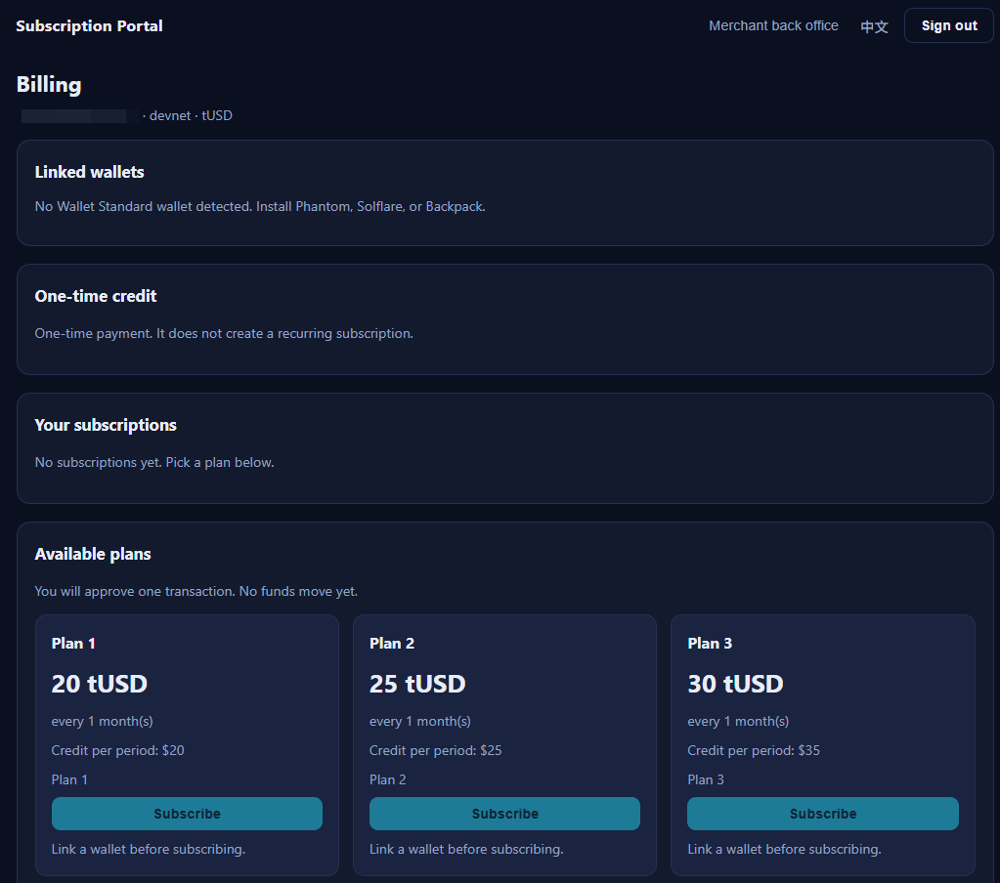
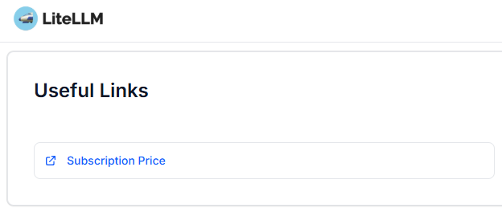

WHAT
One payment layer, two product types.
Fixed credit. A customer signs one exact SPL Token payment and receives a fixed service entitlement.
Recurring service. A customer approves a subscription once; the Portal worker collects each period and refreshes the downstream entitlement.
WHY
Keep commerce, settlement, and service focused.
Solana Recurring owns wallet authorization, payment verification, recurring collection, and audit records. LiteLLM remains the model gateway and API-key service. The Docker image runs on your infrastructure with your database and merchant wallet.
HOW
Start on Devnet. Move to Mainnet deliberately.
- Prepare a private environment file and PostgreSQL database.
- Run the versioned Docker image.
- Configure an administrator, merchant wallet, and token.
- Test fixed payments and recurring plans on Devnet.
- Re-publish Mainnet plans with official USDC only after verification.

PORTAL
Human-approved wallet actions.
The browser uses a Wallet Standard wallet such as Phantom, Solflare, or Backpack. Server-side verification is required before a payment grants service credit.
LITELLM
Payment is not the model service.
After a confirmed recurring charge, the configured provisioner updates the user's LiteLLM budget. LiteLLM continues to handle model access, usage, and API keys.
